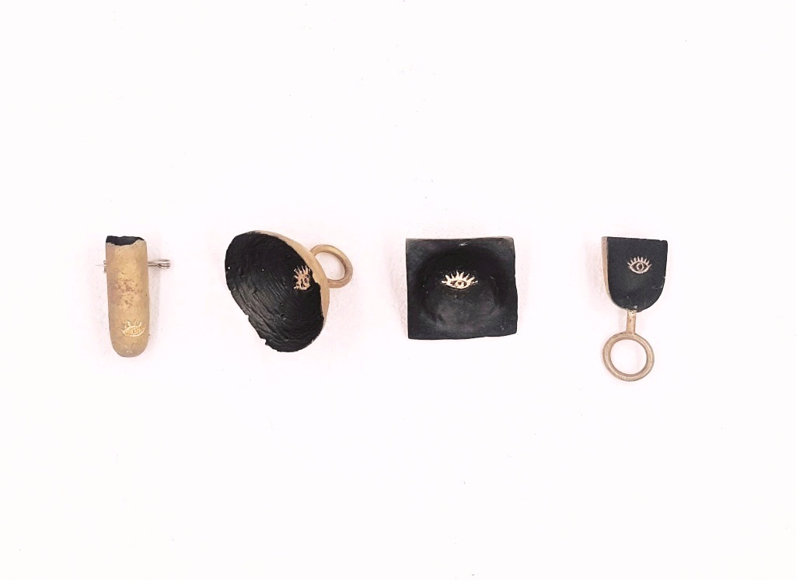

Abyss, 2017

Zihan Zhou
Abyss, 2017
Rings and brooches
Dimensions: varisized.
Material: brass, gold leaf, stainless steel wire.
This series is inspired by a quote of Friedrich Nietzsche in Jenseits von Gut und Böse [Beyond Good and Evil], Nr. 146 (S.H. transl.):
“Wer mit Ungeheuern kämpft, mag zusehn, dass er nicht dabei zum Ungeheuer wird. Und wenn du lange in einen Abgrund blickst, blickt der Abgrund auch in dich hinein.”
(“Whoever battles monsters should see to it that in the process he does not become a monster himself. And when you look long into the abyss, the abyss also looks into you. )